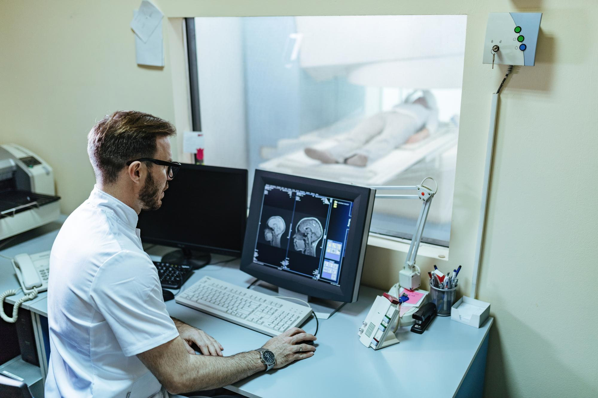

<style>
    .hashtags {
        text-align: center;
        max-width: 800px;
        margin: 20px auto;
        padding: 10px;
    }

    .hashtags a {
        display: inline-block;
        margin: 5px;
        padding: 8px 12px;
        font-size: 0.9rem;
        font-weight: bold;
        text-decoration: none;
        color: #fff;
        background-color: #264653;
        border-radius: 20px;
        transition: background 0.3s ease;
    }

    .hashtags a:hover {
        background-color: #001f3f;
    }

    body {
        font-family: Arial, sans-serif;
        margin: 0;
        padding: 0;
        background-color: #f5f5f5;
        color: #333;
    }

    h2 {
        font-family: "Arial", sans-serif;
        font-size: 2.5rem;
        font-weight: bold;
        color: #001f3f;
        margin-top: 20px;
        text-align: center; /* Center the title */
    }

    p {
        font-family: "Arial", sans-serif;
        font-size: 1rem;
        line-height: 1.8;
        text-align: justify;
        margin: 20px auto;
        max-width: 800px;
    }

    .container {
        display: flex;
        flex-direction: column;
        align-items: center;
        padding: 20px;
    }

    img {
        margin: 20px auto;
        border-radius: 8px;
        width: 100%;
        max-width: 800px;
        height: auto;
        box-shadow: 0 4px 8px rgba(0, 0, 0, 0.2);
    }

    .text-muted {
        font-weight: bold;
        color: #264653;
    }

    .references {
        max-width: 800px;
        margin: 20px auto;
    }
</style>

<section id="project-details">
    <div class="container">
        <!-- Page Header -->
        <h2>Engineering Biology for Space Health: The Future of Self-Sustaining Space Missions</h2>

        <!-- First Image and Description -->
         
   <!--     <p><strong>Human Resilience in Long-Duration Spaceflight</strong></p>-->
      <p>
          Imagine a future where astronauts grow their own food, manufacture essential medicines, and recycle waste—entirely using engineered biological systems. For deep space missions, where resupply from Earth is limited, this is no longer science fiction—it’s necessary.      
      <p>
          The Engineering Biology Research Consortium (EBRC) leads the way with a technical roadmap on synthetic biology solutions for space health. Led by K. Duvall, E.R. Aurand, and I. Hook-Barnard, the research focuses on:
      </p>
   <!--   <h3>Why This Matters for Space Medicine:</h3> -->
      <ol>
        <li>Health & Medicine – On-demand pharmaceutical production and real-time health diagnostics.</li>
        <li>Food & Nutrition – Microbial food synthesis for optimized astronaut diets.</li>
        <li>Environmental Control – Biosensors and microbial ecosystems for waste recycling & air purification.</li>
      </ol>
      <strong>What makes this exciting?</strong>
      <ol>
        <li>Reduces dependency on Earth-based supply chains.</li>
        <li>Creates closed-loop life support systems, enhancing long-duration space travel.</li>
        <li>Has direct applications on Earth, from sustainable food production to bio-manufacturing.</li>
      </ol>
      <p>
          The future of space exploration depends on human adaptability, and that means rethinking how we support life beyond Earth. As missions extend to the Moon, Mars, and deep space, astronauts will need self-sustaining systems that go beyond traditional engineering—leveraging biology, cognition, and AI to create resilient environments. Understanding how we can optimize human performance, decision-making, and survival in extreme conditions isn’t just a challenge; it’s a necessity.
      </p>
      <p>
        The intersection of synthetic biology, neuroscience, and AI is shaping new possibilities for long-duration space travel. From adaptive life-support ecosystems to real-time physiological monitoring, the frontier of human performance is evolving rapidly. As we push the boundaries of what’s possible, the key question remains: How do we ensure astronauts thrive, not just survive, in space?
      </p>

        <!-- Hashtags -->
        <div class="hashtags">
            <a href="https://www.google.com/search?q=SpaceMedicine" target="_blank">#SpaceMedicine </a>
            <a href="https://www.google.com/search?q=Neuroscience" target="_blank">#Neuroscience  </a>
            <a href="https://www.google.com/search?q=RadiationBiology" target="_blank">#RadiationBiology </a>
            <a href="https://www.google.com/search?q=AstronautHealth" target="_blank">#AstronautHealth </a>
            <a href="https://www.google.com/search?q=SyntheticBiology " target="_blank">#SyntheticBiology  </a>
            <a href="https://www.google.com/search?q=Bioengineering " target="_blank">#Bioengineering </a>
            <a href="https://www.google.com/search?q=AIinNeuroscience" target="_blank">#AIinNeuroscience</a>
            <a href="https://www.google.com/search?q=FutureOfAstronauts" target="_blank">#FutureOfAstronauts</a>
            <a href="https://www.google.com/search?q=NeuromodulationTech" target="_blank">#NeuromodulationTech</a>
        </div>

        <!-- References Section -->
        <div class="references">
            <h3>References</h3>
            <ol>
                <li>Duvall, K. et al. Engineering Biology for Space Health: An Innovative Research Roadmap. Engineering Biology Research Consortium (EBRC).</li>
            </ol>
        </div>
    </div>
</section>
